Ebou
A Mastodon Client with a Messenger Feel
Ebou is a different take on the Microblogging / Mastodon experience. It groups new Toots by author and displays them in a UI not unlike modern messengers like Telegram, iMessage or WhatsApp.
This makes it easy to see your friends' updates at once.
It also has a Conversation view which helps seeing replies in the originating context.
Ebou is currently an experiment and therefore missing many features which you might expect from a full Mastodon client. They will be implemented over time.
Help
Ebou orders data in different ways.
- Timeline: Accounts with the most recent Toots are at the top
- Account Timeline: The most recent messages are at the bottom. Ebou will try to scroll to the last Toot you saw, so that you can conveniently “Catch Up” on newer Toots of your friend
- Conversation: Conversations are also sorted chronologically ascending so that you can follow a conversation as it progressed over time
Remember, this is an experiment. If you feel that this concept doesn’t work, feel free to contact me on Mastodon.
Scrolling to the bottom
Ebou tries to always scroll to the right position in the Account Timeline
If you tap a selection in the Timeline twice, then Ebou will automatically scroll to the bottom
Screenshots
{kind=link}
{kind=link}
FAQ
Where can I download it?
You can download it via TestFlight on macOS. Just click here.
How do I attach a file?
Just drag and drop the image onto the window
Which platforms does it support?
It currently only supports macOS, but more platforms are on the horizon once the macOS version has reached a certain stability.
Will it be Open Source?
I don’t know yet. I’m working on Ebou in my spare time. I’ll see where it goes
What is the app icon supposed to be?
A baby elephant astronaut. I find baby elephants particularly cute what with their small trunks.
What's the meaning of the name?
I like it because its short and I couldn't find many other projects with a similar According to the German wikipedia, it is the old egyptian word for Elephant.
This website is awful.
Sure, but it is also a 20min hackjob and it loads fast
Current State
What Works
- Timelines
- Super Minimal Notifications (only Mentions and Ebou doesn’t remember which ones you already saw)
- Posting (including Video / Image attachments)
- Drag and Drop images onto window
- Conversations
- Boost, favorite, reply, bookmark
- Lists
- Your favourites / bookmarks
- Profiles
- Settings
- Search
- Followers / Follows
What is planned:
- Group by more than just users (e.g. Hashtags)
- Other notifications
- Many small UI affordances
- Messaging
- Other things I’m probably forgetting right now
Known Issues
- The Boosted, Replied to and Favourite counts don't always update as expected.
- The character count/limit in the post window isn't always correct.
- Ebou sometimes has problems scrolling to the correct position in a account timeline
2023++ Benedikt Terhechte